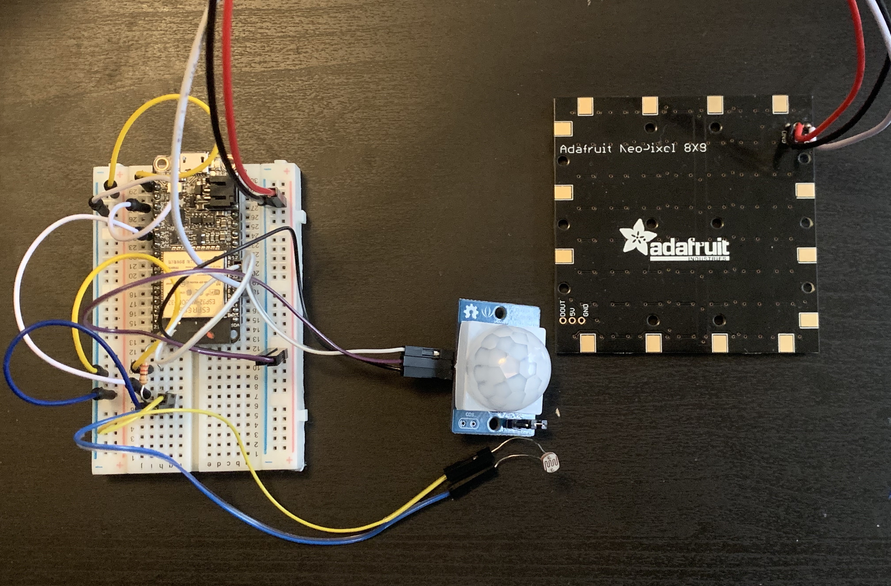
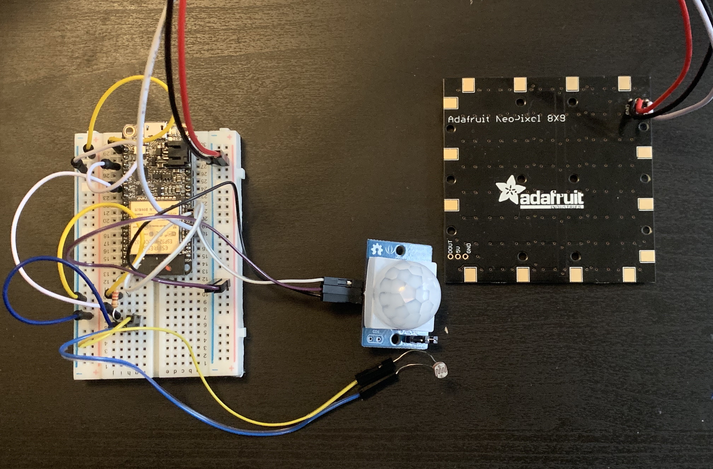
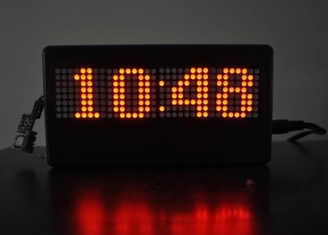
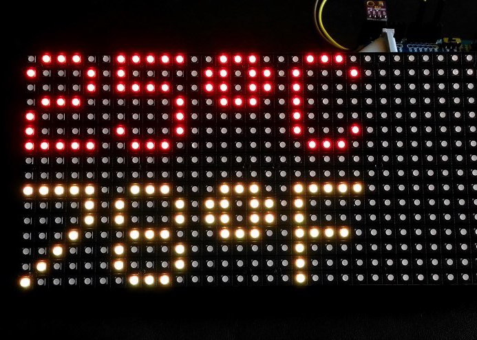

Project 4 - User Interaction
Easing the way that users find their light switch without having to stumble across a room.
When getting home, especially at night, we tend to come home to a dark house and with that most
users will stumble across a room trying to find their light switch. With that in mind I wanted
to create an easier way for them to find their way around a room to turn on their light switch.
I am hoping to achieve simplicity and ease of use when it comes to setting up your room. When we
walk into our room, sometimes we just want to grab something and go, but it will take us longer
because we try to find it in a dark room, where if we knew where the light switch was, we could
easily turn the light on find what we need and leave.
I plan to measure how successful this project
will be by determining how long it would take for users to find the light switch or assigning a task
to find an object with and without the animating arrow.
Background

Some light switches have an automatic sensor that when no light is detected will display an led light on the light switch, but that also takes up a lot of electricity as it is constantly running when the light is off and can also be annoying for users who like their room to be pitch black when the lights are turned off.
Components

Story Board
Process

At first, I wanted to use a random color generator to display light in room.
Then, thought I could test a users interaction by displaying an animating arrow over the light switch.

 

Future Iterations
For the future, I want to add a time and temperature sensor that would then be used to collect the current time and temperature to then be displayed on the LED Matrix after the light was turned on and stay on for 30 seconds and would turn on again every time it detects motion and the there is light detected.
 